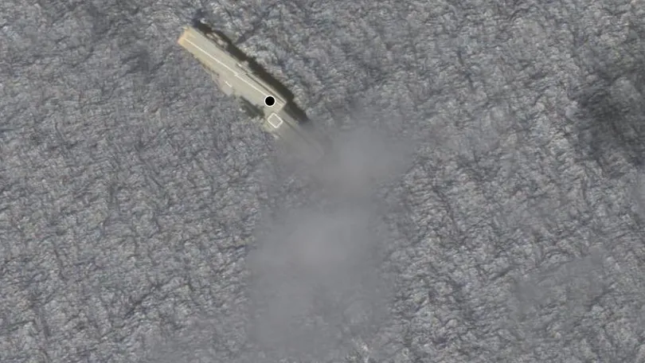

Por que o terremoto que matou 2,4 mil na Turquia e na Síria foi tão devastador

Há 2 horas - Em Mundo
Tremor teve epicentro na Turquia e foi o mais forte em 8 décadas
Parte da base de Lula não quer CPI dos atos antidemocráticos; entenda

Há 10 horas - Em Política
Tensão entre potências
Segundo balão misterioso chinês sobrevoa América Latina, acusam EUA

Há 7 horas - Em Mundo
China pede 'cabeça fria'; entenda
Porta-aviões
Marinha afunda navio que vagou por meses: veja o que se sabe
Há 14 horas - Em Pernambuco
Catástrofe anunciada, dizem ambientalistas
Porta-aviões afundado foi construído na década de 50
Erro no pagamento
Vírus bloqueia aproximação e força uso do cartão físico; entenda o golpe
Há 9 horas - Em Tecnologia